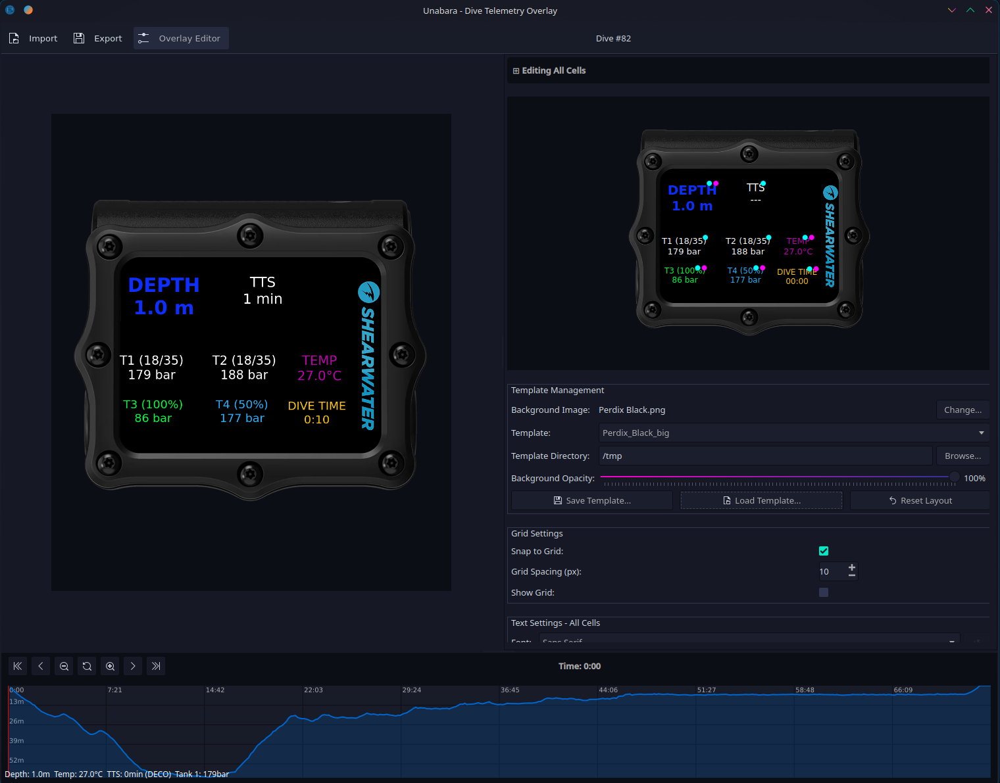

Import your dive logs, customize your overlay, export in seconds. Open source, cross-platform, free.

Import Subsurface dive logs (XML/SSRF) with full support for recreational, technical, and CCR dives with multi-tank pressure tracking.
Drag-and-drop overlay editor with per-cell styling, custom fonts, colors, and background images. Save and share your designs as .utp templates.
Import your footage and auto-align it with the dive data using embedded timecodes. Manual adjustment always available.
Visualize depth, temperature, and pressure graphs. Scrub through your dive, zoom into sections of interest.
Export transparent PNG sequences or encode directly to video (H.264, ProRes, VP9, HEVC) via FFmpeg.
Available for Windows, macOS, and Linux (Flatpak). Built with Qt 6 for a native experience on every platform.
Export your dive from Subsurface as .ssrf or .xml and import it into Unabara.
Pick a template or create your own. Drag cells, change fonts, add a background image.
Load your footage. If your camera records timecodes, the overlay auto-aligns to the dive timeline.
Export as a transparent image sequence for your editor, or encode directly to video with FFmpeg.
Free and open source. No account required.
Optional: install FFmpeg for direct video export.